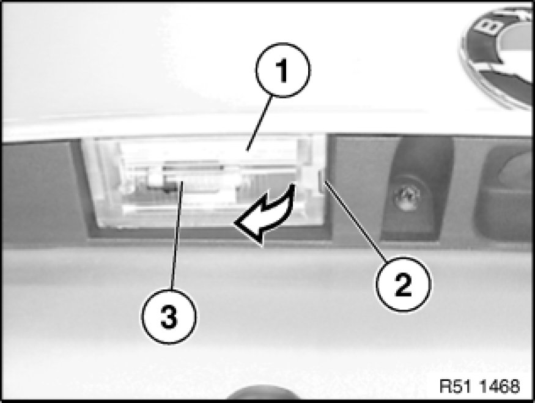

License Plate Bulb: Service and Repair
63 99 401 - Replacing bulb for left or right license plate light

Warning!
Follow instructions for handling light bulbs (exterior lights) Instructions for Handling Light Bulbs (Exterior Lights).

Lever out lens (1) on left or right from opening (2) and remove.
Lever out bulb (3).
Note:
Note type of bulb [1][2]License Plate Bulb.